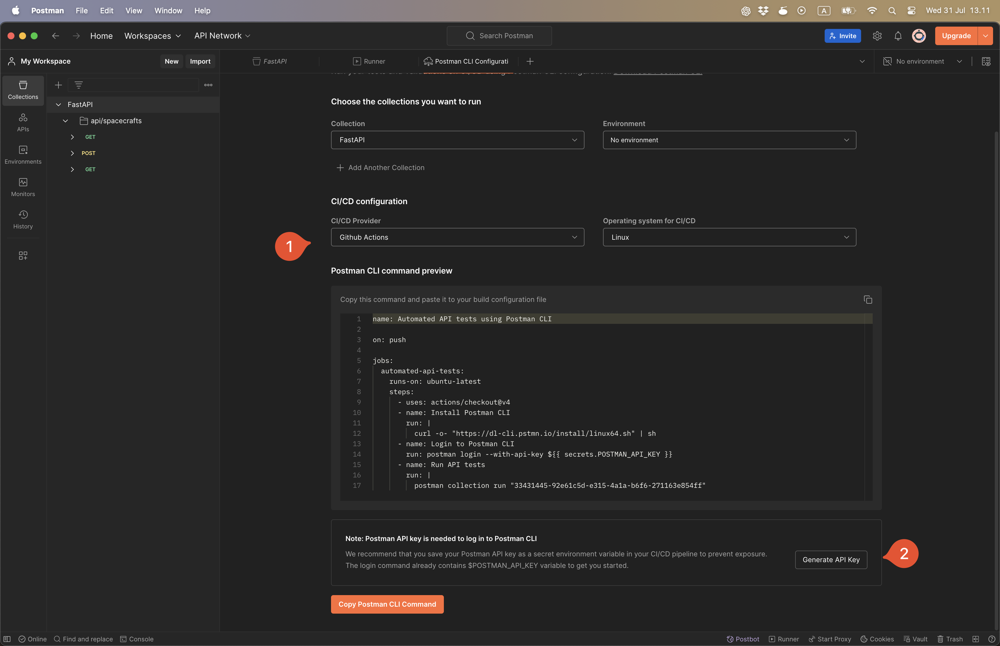

# Sqlite FTS5 **Type**: Group work **Motivation**: Use FTS4 in SQLite for faster searches. --- ## Use FTS5 in SQLite Notice how the SQL `LIKE` operator is used. Let's use the SQLite extension called FTS5 (Full Text Search 5). FTS5 wasn't introduced until October 14, 2015 with version 3.9.0. https://sqlite.org/fts5.html Good information on linking with the virtual table and create triggers to keep the data consistent across both tables. Also shows, near the end, how to rank for relevance: [](https://youtu.be/eXMA_2dEMO0?t=175) --- ## Questions everyone should be able to answer *What are the advantages/disadvantages of the LIKE operator? What are the advantages/disadvantages of FTS5?* *What are the limitations of using SQLite?* --- # [Optional] Postmortem Create a postmortem for a major incident that happened. Only do it if it makes sense. **Type**: Group work --- ## How to write a postmortem Templates for how to conduct a postmortem exist. Each company usually develops their own based on their business domain. You could find inspiration online. Atlassian has a very thorough write-up on the matter: https://www.atlassian.com/incident-management/handbook/postmortems#what-is-post-mortem In this assignment, your postmortem can take any form you'd like. It can be as simple as you want. The main idea is that you investigate a major incident, establish (a) root cause(s) and propose solutions to prevent it from happening again. **Requirement**: The postmortem should be blameless. --- # [Optional] Smoke testing Add a smoke test to your setup. --- ## What is smoke testing? To summarize, a smoke test is a sanity check to check that all parts of the system er operational. To help your understanding there are two claims to the origin of the term "smoke test", but they both illustrate well why it is named that: 1. **Hardware testing**: Engineers would turn on components and look for smoke. 2. **Plumbing**: The practic of sending smoke through pipes to check for leaks. The Wikipedia article provides great terminology and explanations: https://en.wikipedia.org/wiki/Smoke_testing_(software) --- ## When to check? You have 3 choices. Include it as part of: 1. **Continuous Integration**: Run the code on the runner (only possible with cURL and not the Postman tutorial) or a staging server and run the smoke test on it before deploying to production. 2. **Continuous Deployment**: Run the smoke test on the production server after deployment. This wil still be valuable as a visual indicator on GitHub whether the deployment was successful or not instead of having to go to the website and check if everything is running. 3. **Both CI/CD**: Run the smoke test, then deploy and then do another sanity check to verify. Given how simple the pipeline setup is, either of those choices are valid. --- ## The most basic test (cURL) The most simple smoke test would be to use cURL. Here is an example workflow. ```yaml name: Smoke Test on: workflow_run: workflows: "CI" types: - completed jobs: smoke-test: runs-on: ubuntu-latest if: ${{ github.event.workflow_run.conclusion == 'success' }} steps: - name: Run smoke test with cURL run: | # Replace with the actual URL you want to test URL="https://your-app-url.com/" # Perform the request and capture the HTTP status code HTTP_STATUS=$(curl -o /dev/null -s -w "%{http_code}\n" $URL) # Check if the status code is 200 if [ $HTTP_STATUS -eq 200 ]; then echo "Smoke test passed." else echo "Smoke test failed with status code $HTTP_STATUS" exit 1 fi ``` --- ## Create a GitHub Action job with Postman This is a tutorial on how to create a smoke test with Postman. It is surprisingly easy if you already has a collection (with the production URL) with tests saved to it. I recommend it as it makes it easier to test for a lot more things than doing it with cURL. 1. Create or use an existing collection in Postman. The collection should have tests saved to it. It could be to verify a response within a fixed time limit and a status code of `200`. 2. Select the collection and click on `Run`. <img src="./assets_smoke_testing/smoke_testing_1.png" alt="smoke test postman cli"> 3. Select `Automate runs via CLI`. 4. Under **Run on CI/CD** click on the underlined link **Configure command**. <img src="./assets_smoke_testing/smoke_testing_2.png" alt="smoke test postman cli"> 5. As the CI/CD provider, select `GitHub Actions` assuming that this is what you are using.  6. Remember to generate your API key. This should be stored as a GitHub Action secret in your repository with the key name: `POSTMAN_API_KEY`. 7. Copy the command and paste it into your GitHub Action workflow. 8. Success! You can now run your Postman tests as part of your pipeline. --- # User feedback survey! A user feedback survey has been conducted and the results are in... **Type**: Group **No Deadline**: Make sure to implement it eventually. I recommend starting after you have achieved Continuous Deployment so that you get the enjoy your labor. **Motivation**: Just like how market research uncovered the need for the weather feature, listening to your users is a great way to improve your product. --- ## Description Users have reported that they would like to be logged in after they register, rather than being redirected to the login page and asked to log in again. If this is already implemented, then there is no need to do anything.